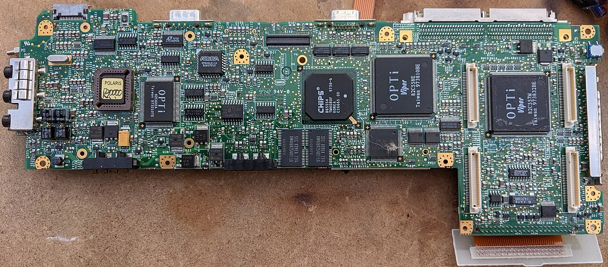

NPU만으로는 교체 버튼이 눌리지 않습니다

AI PC라는 이름은 매력적이지만, 사용자가 노트북을 바꾸는 이유는 이름보다 체감입니다. NPU가 들어가면 작은 AI 작업을 기기 안에서 처리할 수 있고, 화상회의 보정이나 문서 요약, 음성 인식처럼 반복 작업의 지연을 줄일 수 있습니다. 그러나 이것만으로 기업 구매 담당자가 수천 대의 장비를 교체하지는 않습니다. 기존 PC로도 클라우드 AI를 쓸 수 있기 때문입니다.
진짜 교체 수요는 세 가지가 겹칠 때 나옵니다. 첫째, 회사가 허용한 업무 AI가 로컬 처리 기능을 요구해야 합니다. 둘째, 보안팀이 민감한 문서와 회의 데이터를 외부 서버로 보내지 않는 방식을 선호해야 합니다. 셋째, 새 장비 가격이 메모리와 저장장치 비용 때문에 과하게 올라가지 않아야 합니다. AI PC의 승부는 칩 발표보다 배포 정책에서 갈립니다.
메모리 가격이 숨은 가격표입니다
AI PC는 일반 사무용 PC보다 더 많은 메모리를 요구합니다. 로컬 모델을 돌리고, 브라우저 탭과 협업 도구, 보안 프로그램을 동시에 실행하려면 16GB가 최소선으로 보이고 32GB 수요도 늘어납니다. 문제는 AI 서버 수요가 DRAM과 고대역폭 메모리를 빨아들이면서 PC 메모리 가격에도 압력을 준다는 점입니다. NPU가 싸져도 메모리가 비싸지면 완제품 가격은 쉽게 내려오지 않습니다.
이 때문에 2026년 AI PC 시장은 출하량 전망과 평균판매가격을 함께 봐야 합니다. 제조사는 AI 기능을 앞세우고 싶지만, 소비자는 가격표를 먼저 봅니다. 기업은 더 냉정합니다. 직원 생산성이 얼마나 올라가는지, 기존 보안 정책과 충돌하지 않는지, 운영체제 교체 비용까지 포함해 총소유비용을 계산합니다. AI PC가 대중화되려면 성능 경쟁보다 가격 구간이 먼저 안정돼야 합니다.
업무 배포는 앱보다 권한에서 막힙니다
기업 환경에서 AI PC의 가장 큰 장점은 데이터가 기기 안에 머무를 수 있다는 점입니다. 하지만 이 장점은 동시에 관리 부담입니다. 어떤 문서를 로컬 AI가 읽을 수 있는지, 회의 녹취를 어디까지 저장할 수 있는지, 퇴사자 장비에서 모델 캐시를 어떻게 지울지 정해야 합니다. AI 기능이 많아질수록 권한 관리와 감사 기록이 더 중요해집니다.
업무용 AI가 제대로 배포되려면 운영체제, 보안 프로그램, 협업 도구, 문서 관리 시스템이 같은 규칙을 써야 합니다. 한쪽에서는 로컬 요약을 허용하고 다른 쪽에서는 파일 접근을 막으면 사용자는 기능을 꺼버립니다. 그래서 AI PC의 확산은 소비자용 신기능보다 기업용 관리 콘솔에서 먼저 판가름 날 가능성이 큽니다.
개인은 배터리와 조용함을 기억합니다
개인 사용자는 NPU라는 단어보다 배터리, 발열, 소음, 반응 속도를 기억합니다. 사진 정리, 영상 자막, 통화 녹취 요약, 오프라인 번역이 빠르게 돌아가고 팬 소음이 줄면 AI PC의 의미가 생깁니다. 반대로 기능이 클라우드와 비슷하고 배터리만 빨리 닳으면 AI PC는 마케팅 문구로 남습니다.
결국 AI PC는 거대한 혁신이라기보다 PC 교체 주기에 들어오는 새 기준입니다. 좋은 기기는 AI를 과시하지 않고, 사용자가 하던 일을 조용히 줄여 줍니다. 2026년의 관전 포인트는 NPU TOPS 숫자가 아니라 실제 앱이 로컬 연산을 얼마나 자연스럽게 쓰는지, 그리고 메모리 가격이 그 경험을 살 수 있는 가격대에 머물게 하는지입니다.
회사 책상에 깔려야 수요가 보입니다
AI PC의 초기 판매량은 개인의 호기심보다 기업의 표준 장비 교체 일정에서 더 크게 움직입니다. 회사가 노트북을 바꿀 때는 성능만 보지 않습니다. 보안 정책, 장치 관리, 호환성, 원격 근무 환경, 기존 라이선스와의 충돌을 함께 봅니다. 그래서 NPU 성능이 좋아졌다는 설명만으로 대규모 교체가 바로 일어나지는 않습니다.
업무용 AI 기능은 실제로 반복 업무를 줄여야 합니다. 회의 요약, 문서 검색, 표 정리, 코드 보조, 고객 응대 초안처럼 직원이 매일 쓰는 장면에서 시간이 줄어야 예산 담당자가 움직입니다. 기능이 신기해도 사내 데이터에 접근하지 못하거나 보안 승인 때문에 꺼져 있으면 사용률은 낮게 남습니다.
메모리도 중요한 변수입니다. 로컬에서 AI 모델을 돌리려면 기존 사무용 PC보다 더 넉넉한 메모리와 저장장치가 필요합니다. 하지만 메모리 가격이 오르면 제조사는 기본 사양을 올리기 어렵고, 소비자는 고급 모델을 선택하기 부담스러워집니다. AI PC의 보급 속도는 칩보다 부품 원가에서 먼저 막힐 수 있습니다.
소프트웨어 배포도 간단하지 않습니다. 기업은 새 기능을 전 직원에게 한 번에 열기보다 부서별로 시험하고, 데이터 유출 위험을 점검하고, 감사 로그가 남는지 확인합니다. 이 과정이 길어지면 기기는 먼저 들어왔는데 AI 기능은 나중에 켜지는 일이 생깁니다. 시장에서는 이 차이를 놓치면 판매량과 실제 사용량을 혼동하게 됩니다.
결국 AI PC를 판단할 때는 신제품 발표보다 도입률을 봐야 합니다. 기업 조달 계약, 운영체제 업데이트 채택률, 사내 보안 솔루션 지원, 메모리 가격 흐름이 함께 맞아야 합니다. 이 조건이 맞으면 교체 주기가 빨라지고, 하나라도 어긋나면 AI PC는 고성능 노트북의 다른 이름으로만 머물 수 있습니다.
관련 영상
AI PC에서 NPU의 역할은 무엇인가?
AI PC는 반드시 커질 시장입니다. 다만 속도는 반도체 발표가 아니라 기업 배포, 보안 승인, 메모리 가격, 소비자 체감 기능이 함께 맞는 순간에 결정됩니다.
AI PC를 사야 하는지 고민하는 개인이라면 지금 쓰는 업무가 로컬 AI 성능을 실제로 쓰는지 먼저 보면 됩니다. 문서 작성과 웹 검색이 대부분이라면 교체 시점을 서두를 이유가 크지 않습니다. 반대로 영상 편집, 개발, 보안이 걸린 문서 처리처럼 기기 안에서 빠르게 처리해야 하는 일이 많다면 NPU와 메모리 여유가 체감될 수 있습니다. 기업 투자자라면 출하량보다 표준 사양이 어디까지 올라가는지 봐야 합니다. 기본 메모리와 저장장치가 높아지고, 회사 보안 도구가 AI 기능을 공식 지원하기 시작할 때 교체 수요는 더 단단해질 가능성이 큽니다.
제품을 고를 때는 광고 문구보다 지원 기간을 확인하는 편이 낫습니다. AI 기능이 운영체제 업데이트에 묶여 있다면 몇 년 동안 같은 성능을 유지할 수 있는지가 중요합니다. 또한 회사에서 쓰는 문서 관리 도구, 메신저, 보안 프로그램이 로컬 AI 기능을 막지 않는지도 봐야 합니다. AI PC는 한 대의 기기 문제가 아니라 사내 업무 흐름 전체의 문제입니다. 그래서 실제 수요는 매장에서보다 회사 조달표에서 더 분명하게 보입니다.
새 기기가 좋다는 말과 조직이 그것을 매일 쓴다는 말 사이에는 큰 거리가 있습니다. AI PC의 진짜 출발점은 신제품 발표장이 아니라 직원들이 매일 여는 업무 화면입니다.